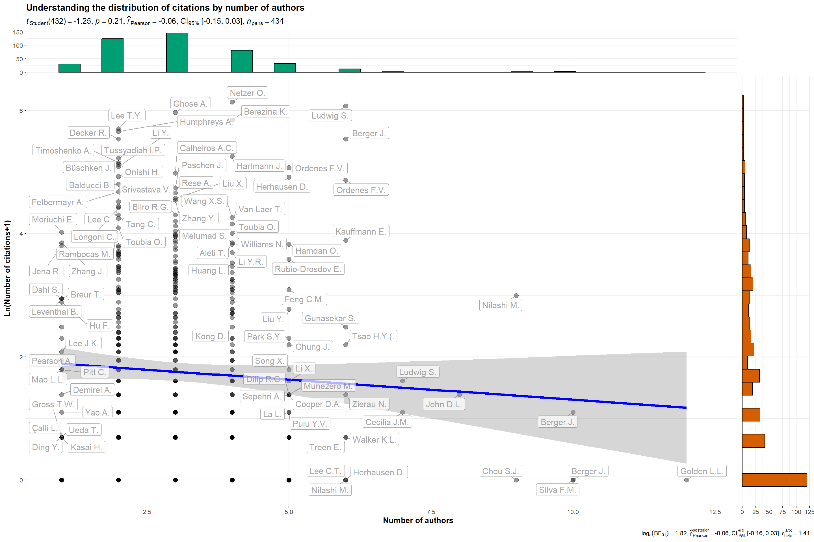
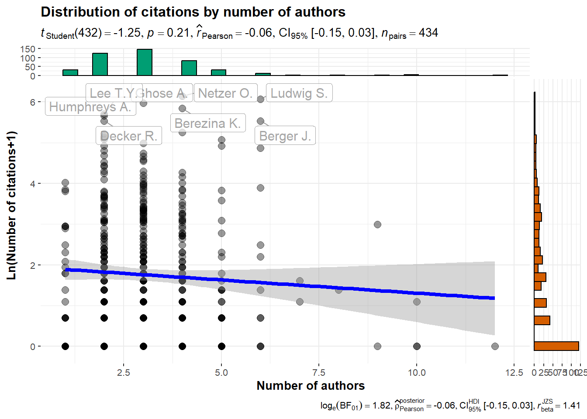
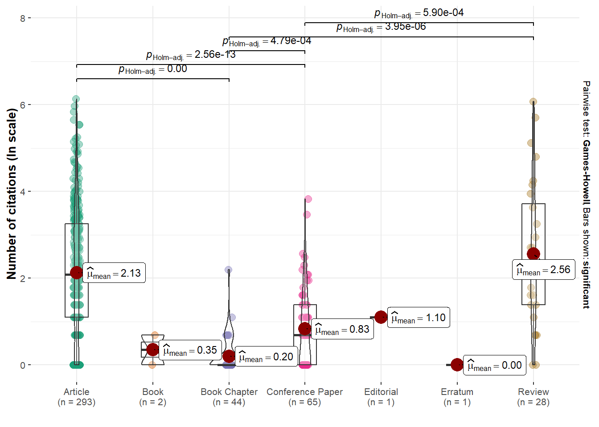
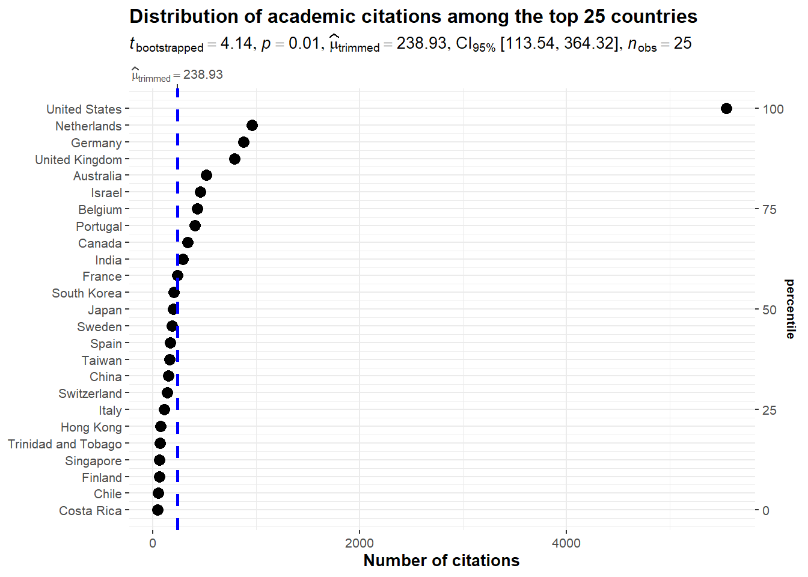

library(cowplot)library(tidyverse)library(ggstatsplot)#read.csv transforms ":" in "." so it was complicated to replicate code#every column name is now lowered, the dots are replaced with _#every underscore at the start or end of the column name is deletednlp_papers <-read.csv("nlp_papers_utf8.csv", fileEncoding ="UTF-8")nlp_full <-read.csv("nlp_full_data_utf8.csv", fileEncoding ="UTF-8")new_colnames <-gsub("\\.", "_", colnames(nlp_papers)) %>%trimws(., whitespace ="_") %>%gsub("_+", "_", .) %>%tolower()colnames(nlp_papers) <- new_colnames
2 A look at the number of marketing publications with NLP
The number of papers in marketing reviews using NLP methods has increased a lot in recent years:
Display code
nlp_papers <- nlp_papers %>%mutate(year =substr(prism_coverdate,1,4))#get rid of conference papersnlp_papers_journal_only <- nlp_papers %>%filter(!grepl("conference", subtypedescription, ignore.case =TRUE)) %>%filter(year <2023)t0 <-as.data.frame(prop.table(table(nlp_papers_journal_only$prism_publicationname)))g01<-ggplot(t0,aes(x=reorder(Var1, Freq), y=Freq))+geom_bar(stat="identity")+coord_flip()+labs( title="Number of articles per review", y="Proportion", x=NULL)t1<-as.data.frame(table(nlp_papers_journal_only$year))g02<-ggplot(t1, aes(x=Var1, y=Freq, group=1))+geom_smooth(color="Grey70", linewidth=2)+geom_line(stat="identity", size=1.1) +labs( title="Number of publications per year", y="", x=NULL)plotgrid <-plot_grid(g01, g02,label_size =10,ncol=2,rel_widths =c(2,1))ggsave(filename="images/evolution_publications_nlp_marketing.png",width =80, height =40, units ="cm")plotgrid
3 A look at the number of citations
It seems that research endeavors within the nascent domain of marketing using NLP methodologies exhibit a resemblance to research conducted on a global scale regarding the number of citations. Indeed, it showcases a pronounced inequity, where numerous papers find themselves receiving minimal or no citations whatsoever.
The subsequent graphs are done with the ggstatsplot R package (Patil 2021).
Display code
```{r}#| layout-nrow: 4set.seed(42)gghistostats(data = nlp_papers,x = citedby_count,title ="Distribution of citations",test.value =12,binwidth =1,xlab ="Number of citations")nlp_papers$log_citedby =log(nlp_papers$citedby_count+1)ggscatterstats(data = nlp_papers,x = author_count,y = log_citedby,xlab ="Number of authors",ylab ="Ln(Number of citations+1)",title ="Distribution of citations by number of authors",label.var = dc_creator,label.expression = citedby_count >200,point.label.args =list(alpha =0.7, size =4, color ="grey50"),xfill ="#CC79A7", ## fill for marginals on the x-axisyfill ="#009E73", ## fill for marginals on the y-axis)ggstatsplot::ggbetweenstats(data = nlp_papers,x = subtypedescription,y = log_citedby,xlab ="",ylab ="Number of citations (ln scale)",plottype ="box",type ="p",conf.level =0.95)nlp_article_per_country <- nlp_full %>%filter(!is.na(afid)) %>%group_by(entry_number) %>%reframe(unique_countries =unique(affiliation_country),nbcitations =unique(citedby_count),publication_id =unique(eid),title =unique(dc.title),journal =unique(prism.publicationName),first_author =unique(dc.creator),date_publication =unique(prism.coverDate),nb_authors =unique(author_count),keyword =unique(authkeywords))#dataframe with the sum of citations per country per articlenlp_article25 <- nlp_article_per_country %>%group_by(unique_countries) %>%summarise(sumcitations =sum(nbcitations)) %>%arrange(desc(sumcitations)) %>%head(25)ggdotplotstats(data = nlp_article25,y = unique_countries,x = sumcitations,test.value =25,type ="robust",title ="Distribution of academic citations among the top 25 countries",xlab ="Number of citations")#ggsave("images/distribution_citations_authors.svg", width=15, height = 12)```
Error in if (...length() && any(...names() == "Dimnames")) .Object@Dimnames <- fixupDN(.Object@Dimnames) :
valeur manquante là où TRUE / FALSE est requis




4 The landscape of research
Patil, Indrajeet. 2021. “Visualizations with statistical details: The ’ggstatsplot’ approach.”Journal of Open Source Software 6 (61): 3167. https://doi.org/10.21105/joss.03167.
Source Code
---title: "Systematic literature review"bibliography: references.bibtitle-block-banner: truesubtitle: "A papers' analysis"author: - name: Olivier Caron email: olivier.caron@dauphine.psl.eu affiliations: name: "Paris Dauphine - PSL" city: Paris state: France - name: Christophe Benavent email: christophe.benavent@dauphine.psl.eu affiliations: name: "Paris Dauphine - PSL" city: Paris state: Francedate : "last-modified"toc: truenumber-sections: truenumber-depth: 5format: html: theme: light: yeti dark: darkly code-fold: true code-summary: "Display code" code-tools: true #enables to display/hide all blocks of code code-copy: true #enables to copy code grid: body-width: 1800px margin-width: 100px toc: true toc-location: left pdf: defaultexecute: echo: true warning: false message: falseeditor: visualfig-align: "center"highlight-style: breezecss: styles.cssreference-location: margin---## Libraries and loading data```{r libraries and load data}library(cowplot)library(tidyverse)library(ggstatsplot)#read.csv transforms ":" in "." so it was complicated to replicate code#every column name is now lowered, the dots are replaced with _#every underscore at the start or end of the column name is deletednlp_papers <-read.csv("nlp_papers_utf8.csv", fileEncoding ="UTF-8")nlp_full <-read.csv("nlp_full_data_utf8.csv", fileEncoding ="UTF-8")new_colnames <-gsub("\\.", "_", colnames(nlp_papers)) %>%trimws(., whitespace ="_") %>%gsub("_+", "_", .) %>%tolower()colnames(nlp_papers) <- new_colnames```## A look at the number of marketing publications with NLPThe number of papers in marketing reviews using NLP methods has increased a lot in recent years:\```{r graph number of publications}#| fig-width: 50#| fig-height: 20#| column: screen-inset-shadednlp_papers <- nlp_papers %>%mutate(year =substr(prism_coverdate,1,4))#get rid of conference papersnlp_papers_journal_only <- nlp_papers %>%filter(!grepl("conference", subtypedescription, ignore.case =TRUE)) %>%filter(year <2023)t0 <-as.data.frame(prop.table(table(nlp_papers_journal_only$prism_publicationname)))g01<-ggplot(t0,aes(x=reorder(Var1, Freq), y=Freq))+geom_bar(stat="identity")+coord_flip()+labs( title="Number of articles per review", y="Proportion", x=NULL)t1<-as.data.frame(table(nlp_papers_journal_only$year))g02<-ggplot(t1, aes(x=Var1, y=Freq, group=1))+geom_smooth(color="Grey70", linewidth=2)+geom_line(stat="identity", size=1.1) +labs( title="Number of publications per year", y="", x=NULL)plotgrid <-plot_grid(g01, g02,label_size =10,ncol=2,rel_widths =c(2,1))ggsave(filename="images/evolution_publications_nlp_marketing.png",width =80, height =40, units ="cm")plotgrid```## A look at the number of citationsIt seems that research endeavors within the nascent domain of marketing using NLP methodologies exhibit a resemblance to research conducted on a global scale regarding the number of citations. Indeed, it showcases a pronounced inequity, where numerous papers find themselves receiving minimal or no citations whatsoever.The subsequent graphs are done with the ggstatsplot R package [@ggstatsplot].```{r}#| layout-nrow: 4#| echo: fencedset.seed(42)gghistostats(data = nlp_papers,x = citedby_count,title ="Distribution of citations",test.value =12,binwidth =1,xlab ="Number of citations")nlp_papers$log_citedby =log(nlp_papers$citedby_count+1)ggscatterstats(data = nlp_papers,x = author_count,y = log_citedby,xlab ="Number of authors",ylab ="Ln(Number of citations+1)",title ="Distribution of citations by number of authors",label.var = dc_creator,label.expression = citedby_count >200,point.label.args =list(alpha =0.7, size =4, color ="grey50"),xfill ="#CC79A7", ## fill for marginals on the x-axisyfill ="#009E73", ## fill for marginals on the y-axis)ggstatsplot::ggbetweenstats(data = nlp_papers,x = subtypedescription,y = log_citedby,xlab ="",ylab ="Number of citations (ln scale)",plottype ="box",type ="p",conf.level =0.95)nlp_article_per_country <- nlp_full %>%filter(!is.na(afid)) %>%group_by(entry_number) %>%reframe(unique_countries =unique(affiliation_country),nbcitations =unique(citedby_count),publication_id =unique(eid),title =unique(dc.title),journal =unique(prism.publicationName),first_author =unique(dc.creator),date_publication =unique(prism.coverDate),nb_authors =unique(author_count),keyword =unique(authkeywords))#dataframe with the sum of citations per country per articlenlp_article25 <- nlp_article_per_country %>%group_by(unique_countries) %>%summarise(sumcitations =sum(nbcitations)) %>%arrange(desc(sumcitations)) %>%head(25)ggdotplotstats(data = nlp_article25,y = unique_countries,x = sumcitations,test.value =25,type ="robust",title ="Distribution of academic citations among the top 25 countries",xlab ="Number of citations")#ggsave("images/distribution_citations_authors.svg", width=15, height = 12)```## The landscape of research```{r}```